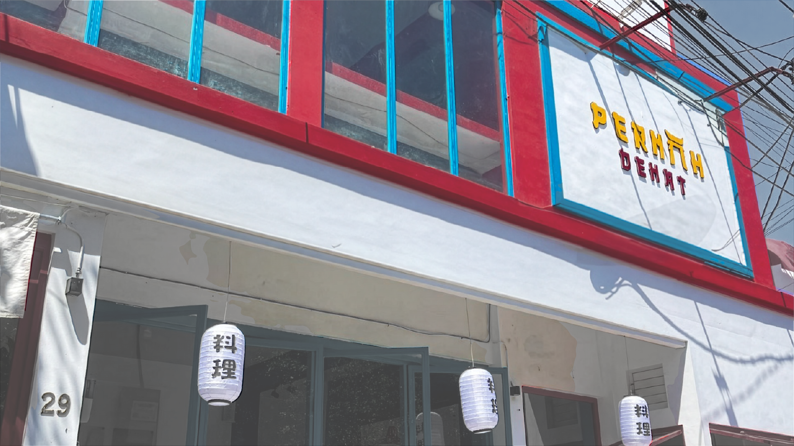
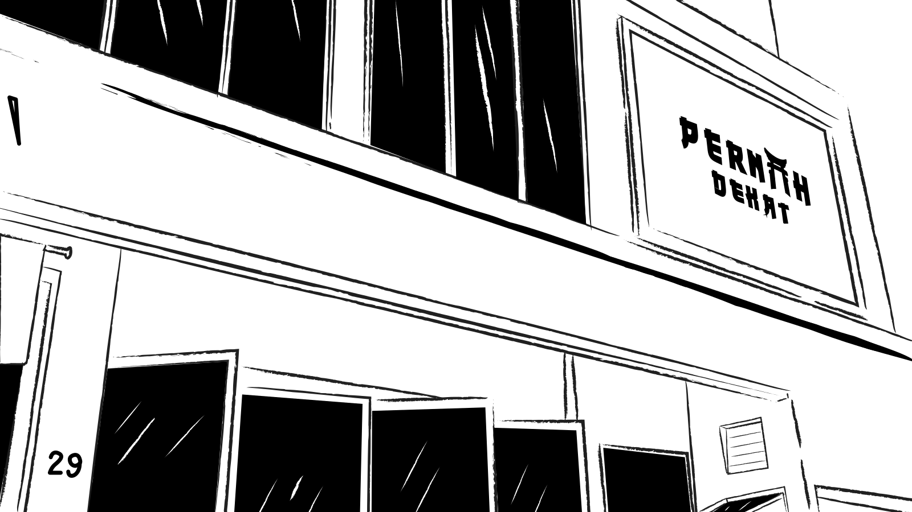
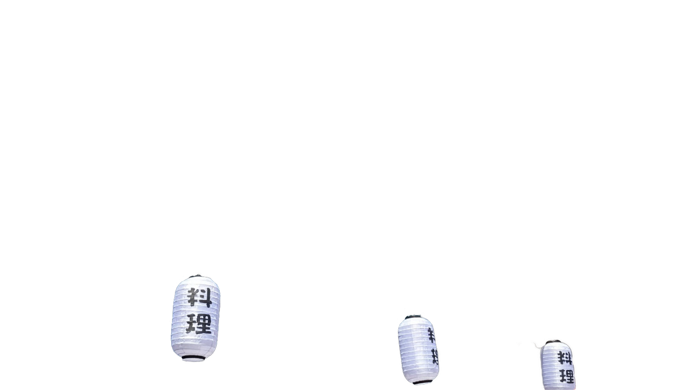

Location
Come by Manyar.
Pernah Dekat is located at Jalan Raya Manyar No. 29, Surabaya. This upper section starts with a white outline on a red field, then reveals the building photo, black outline, and lantern layer as the page scrolls.


